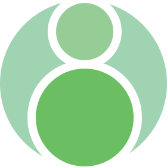

진료에서 확인한 체질로
온라인 정보만으로 체질을 판단하기보다, 진료에서 안내받은 체질을 기준으로 확인하세요.

부천 옥토한의원OCTO KOREAN MEDICINE CLINIC 전화 문의일상 속의 8체질 DAILY CARE
내 몸을 알아가는 진료에서,
나에게 맞는 일상으로.
진료에서 안내받은 체질을 선택해 섭생 자료를 확인하세요.
식생활과 생활습관은 개인의 몸 상태를 함께 살피며 조정합니다.
섭생 안내는 체질과 개인의 몸 상태에 따라 달라질 수 있습니다.
진료 시 받은 개별 안내를 우선해 주세요.
체질별 생활 안내
섭생 기준 안내
개인의 상태와 진료 안내를 함께 살펴주세요. 약재·비타민·주사 등의 항목은 복용·중단 판단에 사용하지 말고 의료진과 상의하세요.
| 분류 | 음식·항목 | 안내 | 참고사항 |
|---|
찾으시는 항목이 없습니다.
섭생표는 진료 상담을 돕는 자료입니다. 알레르기·질환·복용 중인 약은 담당 한의사와 함께 확인해 주세요.
섭생표를 확인하기 전에
온라인 정보만으로 체질을 판단하기보다, 진료에서 안내받은 체질을 기준으로 확인하세요.
같은 체질이어도 몸의 상태에 따라 상담 내용이 달라질 수 있습니다. 진료 시 받은 개별 안내를 함께 살펴주세요.
표에 없는 음식이나 생활습관이 궁금하다면 다음 진료 때 함께 이야기해 주세요.
옥토한의원과 함께